bem-vindo ao lado da força!
Prepare-se para explorar uma galáxia muito, muito distante...
.png)
Prepare-se para explorar uma galáxia muito, muito distante...


Esses filmes seguem Luke Skywalker e seus aliados na luta contra o Império e Darth Vader, descobrindo laços familiares e o poder da Força.


Aqui, a história volta no tempo para explorar como Anakin Skywalker, o pai de Luke, é corrompido pelo lado sombrio e se torna Darth Vader.


Nessa trilogia, novos heróis, como Rey e Finn, surgem para enfrentar a Primeira Ordem e Kylo Ren, o descendente de Darth Vader.


Esses filmes expandem o universo de Star Wars, explorando eventos e personagens secundários.


A Alta República: Representa o início da cronologia de Star Wars.
Queda dos Jedi: Inclui os filmes da trilogia prequela e as séries que exploram a ascensão e queda dos Jedi.
Era do Império: Engloba os filmes da trilogia original e os eventos ao redor da rebelião contra o Império.
Nova República: Aborda os eventos após a queda do Império.
Ascensão da Primeira Ordem: Inclui os filmes da trilogia sequela, com a ascensão e queda da Primeira Ordem.
|
Darth Vader Um Jedi prodígio com nome de Anakin Skywalker que caiu para o Lado Sombrio e se tornou Darth Vader. |
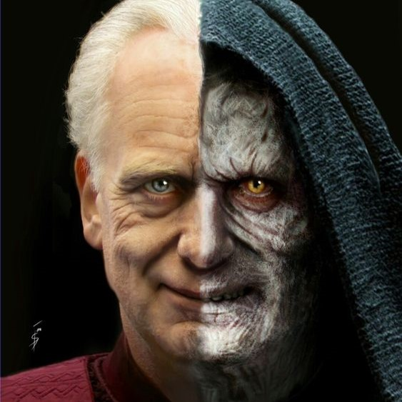
Palpatine O manipulador mestre Sith, conhecido como o Imperador da galáxia. |
Kylo Ren Filho de Leia e Han Solo, dividido entre a Luz e a Escuridão. |
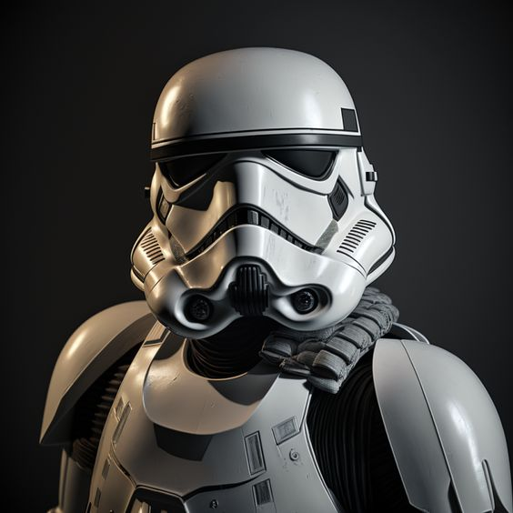
Stormtrooper Os soldados do Império, conhecidos por sua armadura branca e precisão questionável. |
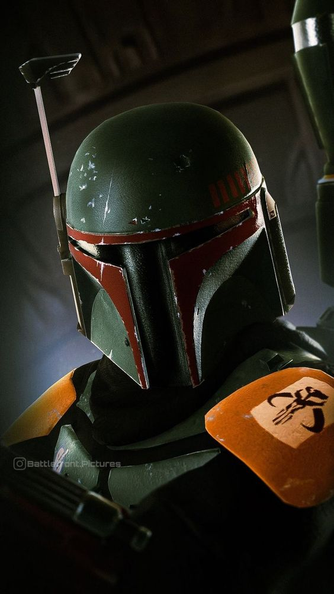
Boba Fett Um famoso caçador de recompensas, conhecido por sua armadura icônica e habilidade mortal. |
|
Yoda Um dos Jedi mais poderosos e sábios, conhecido por seu treinamento e filosofia. |
Obi-Wan Kenobi Um mestre Jedi e mentor de Anakin Skywalker e Luke Skywalker. |
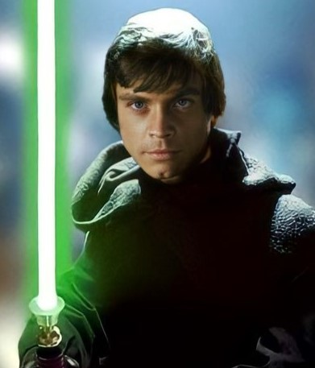
Luke Skywalker O último Jedi, conhecido por sua luta contra o Império e a redenção de seu pai. |
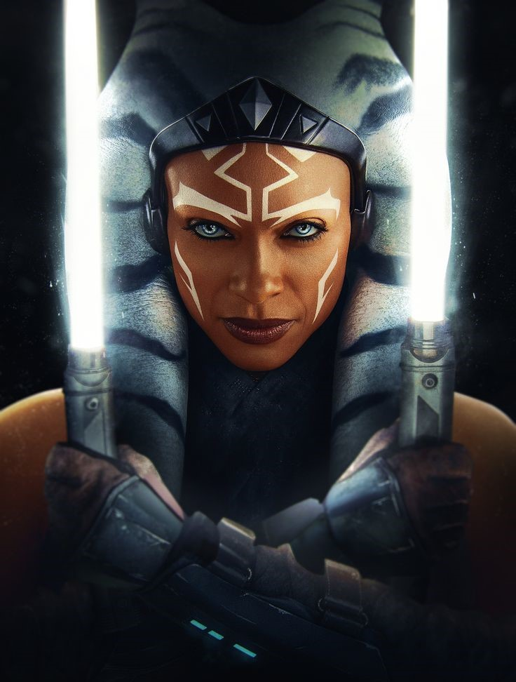
Ahsoka Tano Uma ex-Padawan de Anakin Skywalker, conhecida por sua habilidade e coragem. |
Rey Uma jovem mulher que descobre suas habilidades como Jedi e seu papel na luta contra a Primeira Ordem. |
|
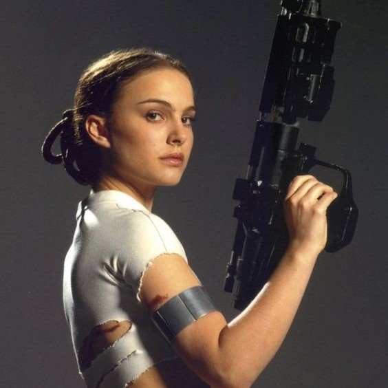
Padmé Amidala Senadora e Rainha, dedicada à paz e justiça na galáxia. |
Leia Organa Princesa e líder rebelde, símbolo da esperança contra o Império. |
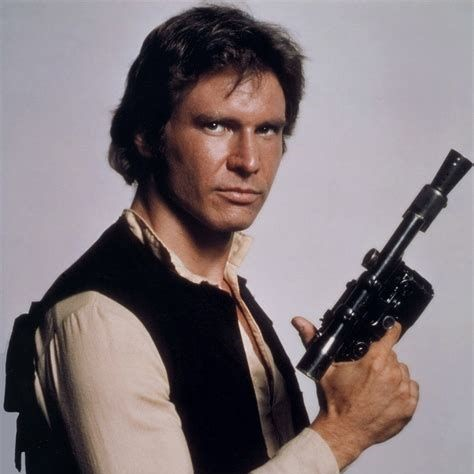
Han Solo Contrabandista e herói rebelde, conhecido por seu carisma e nave, a Millennium Falcon. |
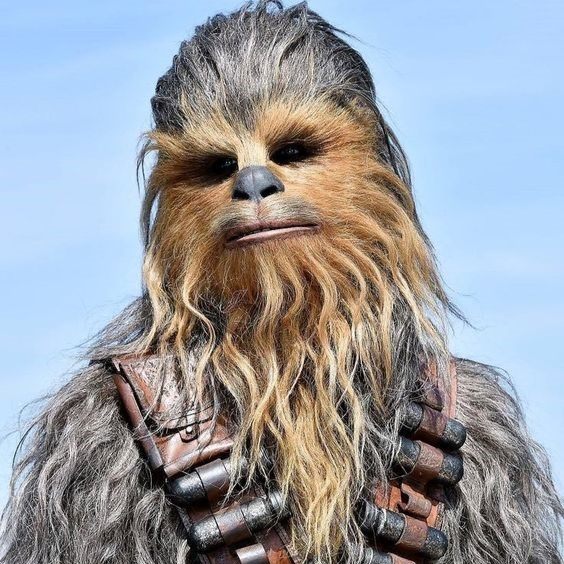
Chewbacca O leal Wookiee e parceiro de Han Solo em suas aventuras. |
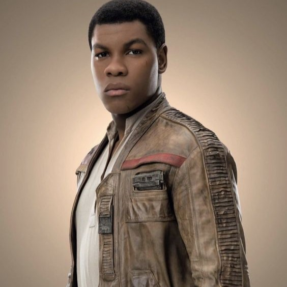
Finn Humano sensível à Força que serviu como Stormtrooper da Primeira Ordem. |
|
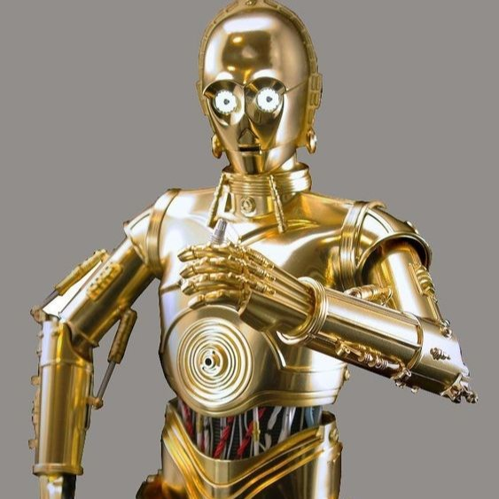
C-3PO Um droide de protocolo fluente em mais de seis milhões de formas de comunicação.. |
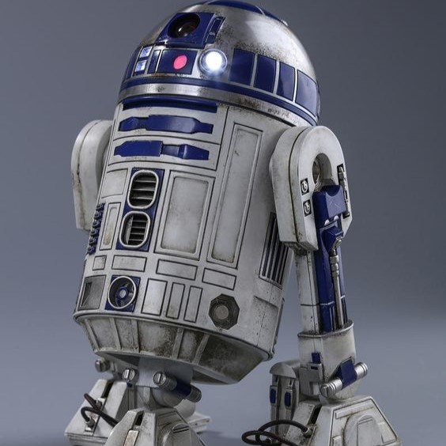
R2-D2 Um astrodroide corajoso, essencial em inúmeras missões pela galáxia. |
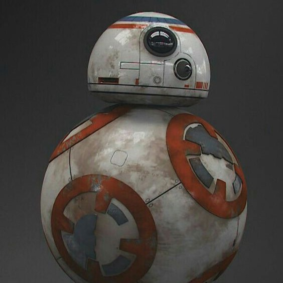
BB-8 Um droide leal e engenhoso, que ajudou a Resistência na luta contra a Primeira Ordem. |
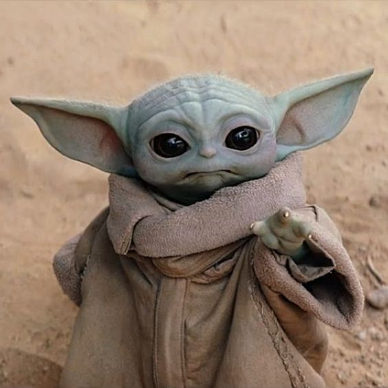
Grogu O jovem padawan sensitivo à Força, protegido pelo Mandaloriano. |
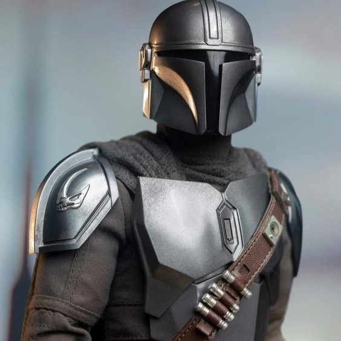
O Mandaloriano Um caçador de recompensas Mandaloriano com um forte código de honra. |
Passe o mouse sobre um sabre para ver o significado.
 A Velha República - Um período de grandes batalhas entre Jedi e Sith.
A Velha República - Um período de grandes batalhas entre Jedi e Sith.
 A Queda dos Jedi - A traição dos Sith e a aniquilação dos Jedi.
A Queda dos Jedi - A traição dos Sith e a aniquilação dos Jedi.
 O Reinado do Império - O Império governa a galáxia com mão de ferro.
O Reinado do Império - O Império governa a galáxia com mão de ferro.
 A Era da Rebelião - A Aliança Rebelde luta contra o Império.
A Era da Rebelião - A Aliança Rebelde luta contra o Império.
 A Nova República - Tentativa de restaurar a paz após a queda do Império.
A Nova República - Tentativa de restaurar a paz após a queda do Império.
 A Ascensão da Primeira Ordem - Nova ameaça galáctica liderada por Kylo Ren.
A Ascensão da Primeira Ordem - Nova ameaça galáctica liderada por Kylo Ren.
 A Nova Ordem Jedi - A reconstrução da Ordem Jedi após as guerras.
A Nova Ordem Jedi - A reconstrução da Ordem Jedi após as guerras.